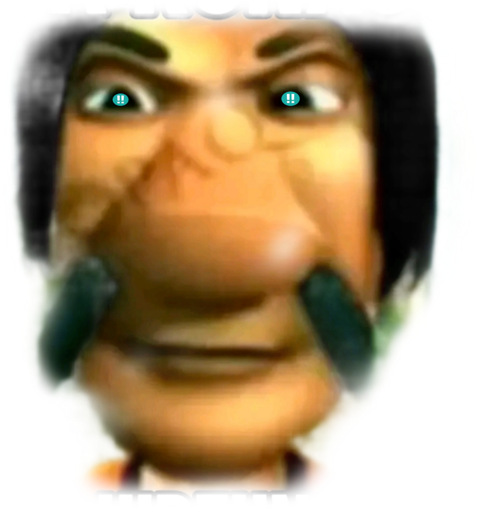

⚙

Fahri Game Review
⚙ Pengaturan
×
Analisis otomatis
Panah mesin (3 teratas)
0.0
⏮
◀
▶
⏭
⟳
Main
Impor
PGN
FEN
Ulasan
Mesin:
—
Kedalaman
12 (kilat)
13
14 (cepat)
15 (Direkomendasikan)
16 (seimbang)
17
18 (akurat)
20 (dalam)
22 (maksimal)
↩ Kembali ke permainan
Permainan baru
♟ Nama pengguna Chess.com
🔶 Nama pengguna Lichess
Bulan Chess.com
terbaru
Ambil permainan
Tempel PGN
Muat permainan
String FEN
Muat posisi
Salin FEN saat ini
Kedalaman pemindaian
12 (kilat)
13
14 (Cepat) (Direkomendasikan)
15
16 (seimbang)
17
18 (akurat)
20 (dalam)
22 (maksimal)
Pindai permainan